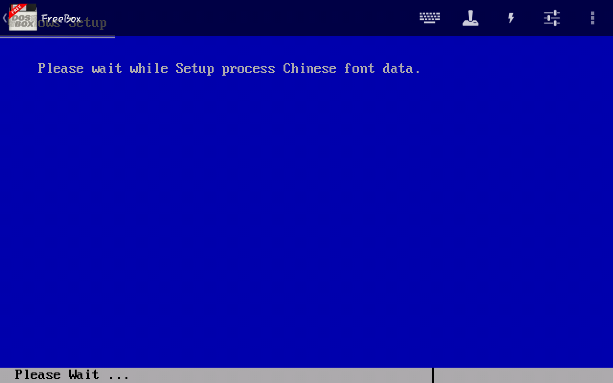

Pasha_012
Как Паша виртуалку установил
Решил я как-то раз установить себе СТАРУЮ винду...
Для начала я скачал образ (*.iso) с сайта old-dos.ru
Скачал.
Распаковал с помощью специальной программы
Запускаю setup.exe с помощью DosBox
Сетаб запустился. Осталось только потыкать "enter"...
Жду...

Ура!!!
Готово!
Осталось пройти обучение...
Pasha012